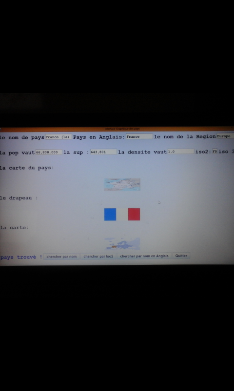

1er semestre: projet consistant à élaborer un petit rpg a l'aide du language C.Le but était de collecter des pièces d'or sur une carte, en faisant attention aux murs et aux pièges.
Ce programme n'était utilisable uniquement en mode console
3ème semestre: développer un logiciel utilitaire. Sa fonction est de rechercher dynamiquement des informations géographiques et démographiques à partir d'un jeu de données fournis.
